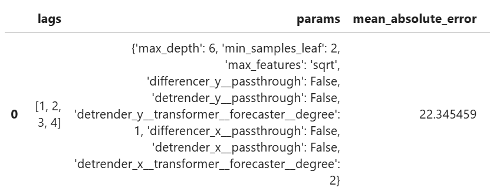

Sktime transformer pipelines in Skforecast
When it comes to preprocessing time series, there are usually many options to consider, e.g. either the target series or exogenous variables, or both, can be seasonally adjusted, detrended, differenced, scaled, stripped of outliers, etc. The right choice of preprocessing steps is hard to make based on visual inspection of the data and/or statistical tests run on individual series. An appealing possibility is to integrate the preprocessing steps into one pipeline with the forecasting method, and optimise the choice of preprocessing steps simultaneously with hyperparameter tuning of the main model, for example, using a Bayesian Search optimiser. As the optimisation is done based on an certain performance metric, such pipeline components get eventually selected that result in the best model performance.
Skforecast is an excellent Python package for time series forecasting: its API closely follows the API of Scikit-Learn, and is easy to integrate with the rest of your project. It has excellent support for SHAP analysis, which is very useful if you were to gain insights into how your model works. However, at the moment skforecast does not implement any time series transformers, other than differencing.
Sktime is another popular package for working with time series, implements a much broader set of functionalities than Skforecast, including various time series transformers, but it does not support SHAP analysis.
In the following, I will describe a fork of Skforecast that can use Sktime's transformers, combine them into a pipeline with the forecasting model, and optimise them in one step together with the HP tuning of the model.
The fork contains two transformers, StartSktimePipe and EndSktimePipe, that make it possible for Sktime and Skforecast to pass data to each other. The transformers should be included into the start and end of Sktime's TransformerPipeline (the example uses two pipelines, one for the target variable and one for the predictors):
from skforecast.utils import StartSktimePipe, EndSktimePipe
pipe_y = TransformerPipeline(
[
('startpipe_y', StartSktimePipe()),
("deseasonalizer_y", OptionalPassthrough(Deseasonalizer(model="additive", sp=52))),
("detrender_y", OptionalPassthrough(Detrender(forecaster=PolynomialTrendForecaster(degree=1)))),
("boxcox_y", OptionalPassthrough(BoxCoxTransformer())),
('differencer_y', OptionalPassthrough(Differencer(na_handling="fill_zero"))),
('endpipe_y', EndSktimePipe()),
]
)
pipe_X = TransformerPipeline(
[
('startpipe_x', StartSktimePipe()),
("deseasonalizer_x", OptionalPassthrough(Deseasonalizer(model="additive", sp=52))),
("detrender_x", OptionalPassthrough(Detrender(forecaster=PolynomialTrendForecaster(degree=1)))),
("boxcox_x", OptionalPassthrough(BoxCoxTransformer())),
('differencer_x', OptionalPassthrough(Differencer(na_handling="fill_zero"))),
("scaler_x", OptionalPassthrough(TabularToSeriesAdaptor(StandardScaler()))),
('endpipe_x', EndSktimePipe())
]
)
The Sktime transformers can be used with the wrapper OptionalPassthrough, which makes it possible to include and exclude the transformer during pipeline optimisation. Once set up, the pipelines can be included into ForecasterRecursive, as its transformer_y and transformer_exog arguments:
forecaster_all_features = ForecasterRecursive(
regressor=DecisionTreeRegressor(),
lags=3,
transformer_y=pipe_y,
transformer_exog=pipe_X,
window_features=RollingFeatures(
stats=['mean', 'std'],
window_sizes=[4, 4]
)
)
After that the Forecaster can be used inside an optimiser, e.g. Bayesian Search, that includes hyperparameter settings also for the forecasting model, e.g., a Decision Tree regressor, as well as different lag settings:
def search_space(trial):
search_space = {
'lags': trial.suggest_categorical('lags', [None, 1, 4]),
'estimator__max_depth': trial.suggest_int('max_depth', 2, 10),
'estimator__min_samples_leaf': trial.suggest_int('min_samples_leaf', 2, 15),
'estimator__max_features': trial.suggest_categorical('max_features', ['sqrt', None]),
'transformer_y__differencer_y__passthrough':
trial.suggest_categorical('differencer_y__passthrough', [True, False]),
'transformer_y__deseasonalizer_y__passthrough':
trial.suggest_categorical('deseasonalizer_y__passthrough', [True, False]),
'transformer_y__boxcox_y__passthrough':
trial.suggest_categorical('boxcox_y__passthrough', [True, False]),
'transformer_y__detrender_y__passthrough':
trial.suggest_categorical('detrender_y__passthrough', [True, False]),
'transformer_y__detrender_y__transformer__forecaster__degree':
trial.suggest_categorical('detrender_y__transformer__forecaster__degree', [1, 2]),
'transformer_exog__differencer_x__passthrough':
trial.suggest_categorical('differencer_x__passthrough', [True, False]),
'transformer_exog__deseasonalizer_x__passthrough':
trial.suggest_categorical('deseasonalizer_x__passthrough', [True, False]),
'transformer_exog__boxcox_x__passthrough':
trial.suggest_categorical('boxcox_x__passthrough', [True, False]),
'transformer_exog__detrender_x__passthrough':
trial.suggest_categorical('detrender_x__passthrough', [True, False]),
'transformer_exog__detrender_x__transformer__forecaster__degree':
trial.suggest_categorical('detrender_x__transformer__forecaster__degree', [1, 2])
}
return search_space
Note the HPs of the forecaster should be prefixed with "estimator__", the parameters of the transformers with "transformer_y" and "transformer_exog".
Once run, the optimiser will find the best combination of the settings for the forecasting model (e.g., "max_features"), lags (first column) as well as both transformer pipelines (e.g., "detrender_y" and "detrender_x"):

The Skforecast fork can be found here. The notebook with a complete example can be viewed here.